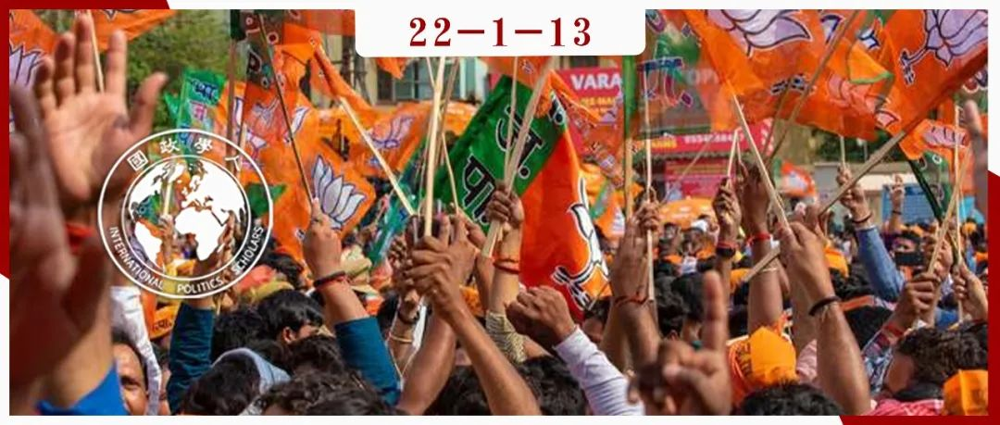

收录于合集
#《国际关系前沿》2022年第1期 23 个
#印度研究 1 个

作品简介 ****
作者： R.Santhosh，印度理工学院人文和社会科学系助理教授；Dayal Paleri，印度理工学院人文和社会科学系博士研究生。
编译： 胡可怡（国政学人编译员，中国人民大学国际关系学院硕士研究生）
来源： R.Santhosh and Dayal Paleri, “Crisis of Secularism and Changing Contours of MinorityPolitics in India: Lessons from the Analysis of a Muslim Political Organization”, Asian Survey , Vol. 61, Number 6, 2021. pp. 999–1027.
归档： 《国际关系前沿》2022年第1期，总第40期。

导读
自1992年巴布里清真寺被拆除事件以来，印度教民族主义的兴起便日益受到关注。2014年，以RSS为意识形态母体的印度教民族主义政党印度人民党上台执政，相较于以往印度教民族主义的发展，莫迪政府时期印度教民族主义的空前崛起更具标志性意义。目前，学术界的大部分研究都选择从推动该趋势的“主体”——印度教民族主义势力的视角切入，对印度国内的宗教政治化以及世俗主义式微的政治生态演变进行剖析。而本文却反其道而行之，将目光投射于受该趋势影响的“客体”——穆斯林的政治动员，探究面对印度教特性的“掠夺性族群化政治”，穆林斯群体如何做出反应，以超越传统的关注“身份”与“包容”的穆斯林政治动员形式，走向更看重“发展”与“平权”的新型穆斯林政治。这种新型动员形式在使用广泛的法律实用主义和公民权话语的同时，也致力于将宗教作为政治动员基础推行“防御性族群化政治”，并与实施“掠夺性族群化政治”的印度教民族主义相互竞争、相互加强，一齐构成了当代印度国内“竞争性族群化”政治图景的两个不同章节，助长了印度世俗主义的危机，进一步促进了世俗主义与民主政治的脱钩进程。本文最主要的学术意义就在于，打破了以往将印度国内政治生态演变的内容简单概括为“印度教民族主义兴起”的思维定势，并提请人们注意：少数族群为了应对印度教特性政治而做出的被动应对也是上述演变中的重要构成部分。
摘要
在印度教民族主义兴起且传统穆斯林政治出现危机的背景下，本文将目光聚焦于当代印度国内穆斯林政治动员不断变化的性质特征。通过对印度人民阵线（the Popular Front of India）的人种志案例研究，本文认为，在印度穆斯林群体中正在产生一种全新的政治动员模式，其核心是展现对“印度教民族主义威胁”的“自卫”。而构建这种“自卫政治”，需要调和两个相互矛盾过程的影响：其一是对法律实用主义（legal pragmatism）的广泛使用；其二是基于伊斯兰身份的防御性族群化（defensive ethnicization）。除此之外，本文还将探讨新近出现的竞争性族群化政治对印度国内世俗主义理念的影响，以及这种政治趋势如何推动了当代印度的世俗主义与民主脱钩的进程。
编译
约占印度总人口14%（约1.72亿）的印度穆斯林群体是一个内部非常异质化的族群，族群成员在身份、阶级、种姓、语言和地区分布等方面具有巨大的差异。但长期以来，假定穆斯林群体内部同质化，并且具有单一政治诉求的“穆斯林票仓”观念却一直深入人心。实际上，后殖民时代印度国内穆斯林的政治动员和政治表达是相当碎片化、多元化和非线性的，这同时也体现了印度民主政治动员的复杂性。
然而近年来，印度教民族主义的复兴以一种前所未有的方式动摇了穆斯林参与民主政治的传统模式，并产生了深远的影响。不同于其他致力于吸引各个选民群体的政党，印度教民族主义政治的核心是基于印度教多数主义（Hindu majoritarianism）的排他性思想。随着这种思想的日益盛行，将穆斯林视为“危险的他者”与（印度教）民族福祉之“威胁”的系统性诋毁在印度国内政治动员和社会话语中变得愈加根深蒂固，这进一步煽动了针对穆斯林群体更为直接的暴力，推动了该群体在主流社会话语中的边缘化，这也对穆斯林未来在印度民主制度中的政治代表性构成了挑战。
在印度教民族主义崛起导致了世俗主义危机的背景下，穆斯林该如何应对变化的局势？为探析这一问题，本文聚焦于印度穆斯林群体中新近出现的政治动员形式，尤其是1992年巴布里清真寺（Babri Masjid）被拆毁（这一事件也常被视为近代印度历史的转折点）后形成的政治动员。印度向印度教多数主义渐进但明确的转变，以及“新型印度教特性”（neo- Hindutva）作为霸权式的文化民族主义思潮的兴起，促使印度穆斯林产生了新的政治动员形式。基于此背景下，本文选取了其中一个代表性的穆斯林政治组织——印度人民阵线（Popular Front of India，简称PFI）作为案例研究对象（该组织于1992年巴布里清真寺被拆除之后不久在印度南部的喀拉拉邦成立），对该组织的发展历程进行了具体分析。
本文认为，PFI的政治取向体现出了一种对世俗自由主义的调和，这既包括对法律实用主义的广泛运用，也包括一种通过排外主义与对宗教的工具化使用进行校准的防御性族群化政治。这种调和最终表现为一种“自卫”的话语，这既意味着保护穆斯林群体的法律、政治和人身权，也进一步延伸将伊斯兰视为一个道德领域范畴，以保护其免受印度教民族主义者、亵渎者以及那些违反伊斯兰教道德界限之人的威胁。此外，本文也认为，竞争性的族群化政治对世俗主义理念（哪怕是规范性、最低程度上的）具有不利影响，这将加速当代印度世俗主义与民主政治脱钩的进程。
01
印度教民族主义的兴起以及不断变化的穆斯林政治
尽管印度对国内少数群体采取的“包容”模式总是被认为优于许多西方民主国家的“同化”模式，但它也因将少数群体的权利简化为一揽子的文化和宗教权利，而忽略了这些群体在社会经济领域所面临的边缘化困境而饱受质疑。少数族群权利保障在印度虽然被制度化，但是没有经过公开辩论，因而在印度社会缺乏更广泛的政治共识。另外，印度政府对少数族群宗教属人法的相对不干涉，造成了“少数族群绥靖”（minority appeasement）概念的产生，这一概念在印度教民族主义运动中被广泛使用，以支撑其认为世俗主义通过牺牲占大多数的印度教徒的宗教权利换取宗教少数群体选举支持的批评。
在后殖民时代，印度穆斯林的主要政治动员与政治表达是以对少数族群民主包容的模式为前提的，并且高度依赖于该模式。有学者将这种政治动员形式概括为“穆斯林特殊主义”（Muslim particularism）， 这种由精英领导的传统政治动员方式在历史上对穆斯林群体内部在阶级、种姓和性别等方面的结构性不平等漠不关心，而主要关注文化、宗教和语言认同的问题。但在20世纪90年代，穆斯林政治展现出一系列新的动态，一大批使用社会正义语言并且不满穆斯林群体在印度社会经济领域边缘化现象的穆斯林政治组织开始涌现。 其中，反映印度穆斯林社会经济地位落后状况的萨查尔委员会报告（The Sachar Committee Report）起到了重要推动作用，促进了印度穆斯林政治话语从“身份”到“发展”，从“包容”（accommodation）到“平权”（affirmative action）的决定性转变。但另一方面，这些新的穆斯林政治主张未能有效整合为囊括全国范围的政治形态，传统的穆斯林政治仍然占据一席之地，宪法包容（constitutional accommodation）和民主政治的框架依然是穆斯林政治动员的重要场所。
近年来，印度教民族主义的兴起及其将穆斯林视为“国族的他者”（other of the nation）的系统性诽谤极大程度上撼动了印度的民主包容模式以及有关少数族群权利的政治话语。印度教民族主义，又称“印度教特性”（Hindutva），是一种族群民族主义意识形态，旨在将印度改造为一个排他性的印度教民族国家（Hindurashtra）。作为一种连贯的意识形态，印度教民族主义最早体现在萨瓦卡尔（Savarkar）的著作中，并在印度独立之后通过国民志愿服务团（Rashtriya Swayamsevak Sangh，简称RSS）及其附属机构变得愈加可操作化。
印度教民族主义在地方邦和国家层面的霸权式崛起，大大削弱了印度穆斯林的政治代表性。2014年，印度人民党政府（由莫迪领导）当选执政，人民院（印度下议院）的穆斯林人数仅有23人，这是印度政治史上最少的一次。1980年至2019年，虽然印度穆斯林总人口数量上升，但是穆斯林议员在人民院的占比缩减了一半以上。邦议会的穆斯林代表人数也已降至历史最低水平：在印度四分之三以上穆斯林居住的10个邦的281位部长中只有16名是穆斯林。
印人党巩固印度教徒选票的策略在2014年与2019年大选中为该党带来了丰厚的回报，与此同时，该党获得的印度教和非印度教选民的选票数量之差也是史无前例的。超过百分之九十的印人党选民是印度教徒，这突出表明， 印人党无意构建多宗教的社会联盟，而是只重点关注印度教选民，这是与之前所有当政的政府截然不同的做法。 另外，在穆斯林的政治代表性不断萎缩的同时，针对穆斯林的宗教仇恨犯罪和私刑暴力也迅速增加。数据显示，2009年至2018年期间记录的宗教仇恨犯罪中，有90%发生在2014年印度人民党上台后。一方面是政治代表性的萎缩，另一方面是针对穆斯林的私刑暴力的增加，导致了全国范围内穆斯林在政治和社会生活中被疏远和诋毁。执政的印度教右翼正在推行他们长期孜孜以求的议程：摆脱独立以来的“伪世俗主义” （pseudo- secularism），实现“真正的世俗主义”，并在自由世俗主义理想的叙事模式下，呼吁严格地平等对待所有宗教，不给少数族群以特权。长达数十年的反宪政世俗主义并将其污名化为“伪世俗主义”的意识形态运动，使印度教右翼能够贬低其他少数族群的权利，并着手实行多数主义政策，这向以宪政包容和少数族群权利为核心的传统穆斯林特殊主义政治提出了严峻挑战。
02
印度人民阵线（PFI）的出现与发展
传统的穆斯林政治因印度教民族主义的崛起而出现危机，与此同时，穆斯林的社会经济边缘化更加凸显，这是印度穆斯林少数族群政治模式转变的决定性因素。必须在这种不断变化的政治背景下，审视PFI在喀拉拉邦的出现以及向印度其他地区令人瞩目的扩张。PFI在后巴布里清真寺时代出现的穆斯林政治组织中占有重要地位；尽管选举表现不佳，但它强大的组织网络具有辐射全国的影响力。该组织的出现是对印度教民族主义的兴起和随之而来的少数民族权利合法性减弱的直接回应。
1993年，在喀拉拉邦卡利卡特（Kozhikode）成立的国家发展阵线（NDF），是巴布里清真寺被拆除后立即出现的新型穆斯林政治动员形式的典范。当时一部分穆斯林青年对传统穆斯林政党应对与抵制印度教政治崛起的方式深感不满，他们希望在喀拉拉邦开启一种新的政治模式。2006年，NDF与其他几个类似的组织合并，演变为PFI。PFI 声称自己是印度低层群体的代言人，这些群体包括穆斯林、达利特人、其他落后阶层（OBCs）和部落民，他们是印度种姓等级制度和不平衡发展模式的受害者。该组织还提出了一种基于世俗发展主义的“积极政治”，并重新强调他们作为印度公民的法律权利。尽管PFI在少数族群权利问题上与传统穆斯林政党保持类似的立场，但它对后者的精英倾向、顺从及软弱的特点提出了严厉的批评，并认为传统的穆斯林政党所采取的政治表达方式大大损害了该国穆斯林的安全和福祉。
尽管没有明显提到宗教并摆出了向所有印度公民开放的姿态，但PFI实际上仍然是一个完全由穆斯林男子组成的组织。与传统穆斯林政治组织相比，它的组织结构网络与它所憎恶的印度教民族主义组织非常相似。2009年6月，PFI组建了一个选举政治阵线——印度社会民主党（SDPI），其明确的目标是“促进包括穆斯林、达利特人、其他落后阶层和阿迪瓦西人（Adivasis）在内的全体公民的进步与共同发展”。相比于几乎只接受穆斯林成员的PFI，SDPI向所有人开放，并作为一个平台以彰显“穆斯林- 达利特- 其他落后阶层”的政治联盟。隶属于PFI的另一个主要组织是全印度伊玛目委员会（AIIC），该组织专注于宗教教育和宗教学者的活动，“致力于将来自所有思想流派的乌里玛们（伊斯兰经学者）联合起来，为穆斯林群体和国家的美好未来共同努力”。PFI的妇女分支是全国妇女阵线（National Women’s Front），学生分支是印度校园阵线（the Campus Front of India）。PFI还拥有大量其他支线机构，例如社会服务组织康复印度基金会（Rehab India Foundation）、伊斯兰教育中心“真理之路”（Sathyasarani）、地方新闻平台“Thejas”等。
PFI政治行动的核心是抒发穆斯林的不满和受害感（victimhood），并期望超越印度穆斯林群体内部的地区、宗派、种姓和阶级分隔。在掠夺性的印度教特性政治兴起之后，PFI认为有必要将印度国内四分五裂的穆斯林团结起来，并经常将印度穆斯林的境况与全球其他地区的穆斯林作为受害者所遭受的苦难联系在一起进行叙述，不断就涉及巴勒斯坦、伊拉克等地区的穆斯林状况组织公共活动，并将其与印度穆斯林面临的各种暴力相提并论。
PFI组织网络的显著扩张目前并没有转化为SDPI在联邦层面的选举优势。在喀拉拉邦，SDPI的得票率从2014年议会选举的1.5%下降到2019年的0.4%。但是它在地方选举层面取得了一些成果，特别是在卡纳塔克邦，这表明基层民主正成为其建立选举大本营的主要手段。PFI将自己描述为一个“新社会运动”（neo- social movement），积极参加公民领域的非正式政治活动，并且致力于将穆斯林群体对印度教特性的应对转向以“穆斯林自卫 ”理念为中心的、更加统一和强硬的政治表达。
03
迈向穆斯林政治的新模式？
PFI与其他传统的穆斯林政治组织存在许多不同：首先，PFI已经成功地扩展到了印度的大多数地方邦，抒发了一种穆斯林怨恨和受害感的全国性政治表达。第二，PFI的政治和意识形态坚定地围绕着它的“憎恶对象”（印度教民族主义组织）展开。在坚决反对印度教民族主义组织活动的过程中，PFI巧妙地使用了一系列的策略，将自由世俗主义和对宗教的工具化使用结合起来。
为了证明印度教特性政治于穆斯林是有害的，该组织有效利用了针对穆斯林暴力事件的叙述和记忆，如古吉拉特大屠杀、孟买骚乱和其他的一系列暴行，同时还不断指责世俗政党在保护穆斯林生命和财产安全方面无所作为。强调穆斯林群体在人身安全保护方面自力更生是PFI的关键论点之一。在该组织的计划、活动和宣传材料中，都表达了诉诸武力抵制印度教侵略的意愿。
PFI本身存在两个存在鲜明差异的维度：一方面，PFI被视为一种新的穆斯林社会运动，“促进公民权利、宪法意识和以实践为导向的工作伦理，以推动穆斯林少数人口的政治代表性”，是提高其追随者法律和权利意识的新型穆斯林少数族群政治参与的体现；另一方面，在印度教民族主义者日益掠夺性族群化（predatory ethnicization）的背景下，PFI还着手暴力推进“防御性族群化”（defensive ethnicization）政治，并通过构建一个基于伊斯兰身份认同和神学的政治道德共同体，以使这种“防御性族群化”获得正当性。在这个过程中，PFI汲取了伊斯兰教的组织和神学资源，通过伸张“自我安全化”（self- securitization）的话语，调动了少数族群面对印度教民族主义暴力时的焦虑和不安全感。总的来看， PFI的政治运作方式是法律实用主义和防御性族群化两者的调和，这种调和是通过“自卫”语言进行的。 由此，PFI构建了穆斯林群体怨恨和受害感的连续性表达，这也预示着印度穆斯林少数族群政治的转变。与此同时，对更深层次的疏离感和受害感的阐发，以及通过宗教身份和神学术语让族群获得安全感的尝试，反映了世俗民主政治在当代印度面临的深层危机。
04
结论：世俗主义与民主的脱钩及印度穆斯林政治的前景
印度教民族主义在印度国内掌权严重改变了该国的民主理念和实践。印度教民族主义者修改旧法、创设新法，具体举措包括废除宪法第370条、颁布公民身份法修正案等。这伴随着针对少数族群仇恨犯罪和私刑数量的急剧增加，以及少数群体在中央和地方的政治代表性急剧下降，预示着当代印度向多数主义政治令人担忧的转变。这些转变的核心是作为一种意识形态和实践方式的世俗主义价值观正面临着空前的危机。 印度教民族主义的兴起以及其向族群式民主的迈进，从根本上重构了印度式民主中宗教与政治的关系。
世俗主义被理解为对社会多元化和多样性的实质性承诺，并反对基于宗教身份给予公民政治歧视或选择性的优待。世俗主义并非一个独立的概念，而是民主的“伴侣”，因为其内涵是将实质性的平等扩展到各宗教群体。然而在印度，民主的含义经历了从“政治多数的暂时统治”向“族群宗教多数派的永久统治”的转变。这种多数主义的民主思想与世俗主义思想脱钩，这是与“国大党时代”存在决定性的差异。在国大党执政的时代，民主（至少在原则上）从未与世俗主义分开，因为国大党从未设想过抛弃世俗主义原则而只作为印度教徒的代表。 而在印度教特性政治的叙述中，民主和世俗主义正日益成为相互排斥的范畴， 因为族群宗教多数派的统治不符合对世俗主义的规范性理解及其对少数人权利、多元化和宽容的承诺。这标志着世俗主义在印度政治中的规范性地位的崩溃，造成了它今天所面临的危机。政治话语已经转变到这样的程度——即使是传统的世俗政党也不敢冒然公开支持穆斯林议题，以免被贴上支持穆斯林的绥靖主义标签。
有一些研究穆斯林政治的学者认为，世俗主义危机使传统的穆斯林政治也同样面临挑战，这为更加民主、世俗化、强调社会经济边缘化、社会正义和公民权等问题的穆斯林政治形式提供了肥沃的土壤。然而，正如上文有关PFI政治动员的案例讨论所展现的，政治世俗主义的萎缩为防御性的族群化政治提供空间，而并未为族群内部的宗教改革和民主化铺平道路。穆斯林共同体的首要目标是保护宗教群体的公民权利，任何在性别或种姓歧视方面的内部改革尝试都被视为分裂和不合时宜的。
PFI的政治，虽然其与印度教民族主义政治对立，但却与后者联手促成了世俗主义在印度的被去中心化。 最低限度的世俗主义有三个特点：其一，国家或政治话语不以特定的宗教教义来为其法律、政治动员辩护；其二，不为任何一种特定的社会身份背书，也不破坏其他社会群体的平等地位；其三，在日常生活中，如在信仰、教育、性取向、家庭和衣着等方面，不推崇某特定宗教的“善”的理念。正如在前面的讨论中所表现的，印度教民族主义和PFI的政治话语都与这种构成自由民主基础的规范性世俗主义概念相对立。与世俗主义的图景相反，竞争性族群化的政治诉求于特定的宗教教派，将宗教作为社会政治行动应该依据的蓝图。最重要的是，它寻求积极监督宗教的界限及其实践，并往往诉诸道德警戒主义（vigilantism）和暴力，旨在构建基于宗教的道德共同体。由此产生的世俗主义危机，以及世俗主义在国家日常民主政治中的缺位，将对宗教之间的和谐共存与国家民主制度的特质产生深远影响。
词汇积累
印度教多数主义 Hindu majoritarianism
印度教特性 Hindutva
其他落后阶层 Other Backward Class (OBC)
审校 | 王图梓 赵怡雯
排版 | 王慧瑜 彭雯昕
文章观点不代表本平台观点，本平台评译分享的文章均出于专业学习之用, 不以任何盈利为目的，内容主要呈现对原文的介绍，原文内容请通过各高校购买的数据库自行下载。

国政学人
支持学术公益与知识传播
微信扫一扫赞赏作者 __赞赏
已喜欢，对作者说句悄悄话
取消 __
发送给作者
发送
最多40字，当前共字
上一页 1/3 下一页
长按二维码向我转账
支持学术公益与知识传播
受苹果公司新规定影响，微信 iOS 版的赞赏功能被关闭，可通过二维码转账支持公众号。